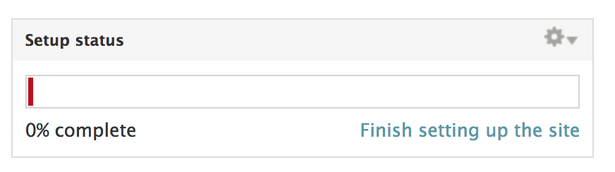
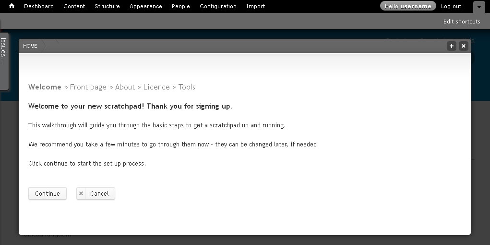

Site setup¶
This workflow leads you through step-by-step the basic set up of your new site.
Go to the dashboard and click Finish site setup
Click the Continue button to start the set up workflow.
Step 1: Front page welcome message
The first step is writing a welcome message that will appear on the front page of your site.
Images will appear separately on the front page, so don’t add them to the welcome message.
Enter a welcome message, and select “continue”.
Step 2: About your site
Enter text to create your sites “” Use the icons of the rich text editor to format your text or to add links or images
Step 3: Licence
Select a Creative Commons license to apply to the content of your site. The default license is “Attribution CC BY” but you can select a different license if you want.
See http://creativecommons.org/licenses/ for an explanation of licenses
Step 4: Category
Select the appropriate categories for your Scratchpad.
- Scope
- Ecoregion
- Geographical extent
- Research domain
- Taxonomic area
This information is used by the team to analyse Scratchpads usage.
Step 5: Tools
Tools turn on and off different features of Scratchpads. For this training course, don’t change any of the tools, just save. We will activate and use some of the tools later in the course. The less tools activated the easier sites are to use for people with little Scratchpad knowledge.
Finish
Click on the Finish button to complete the set up.